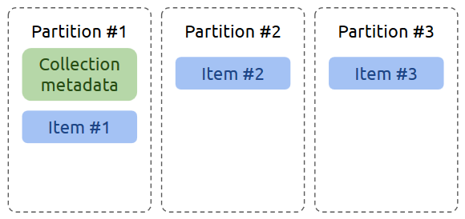
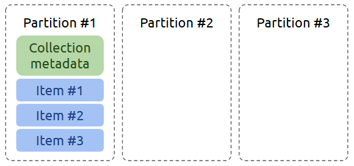
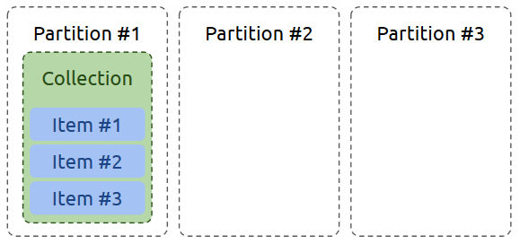
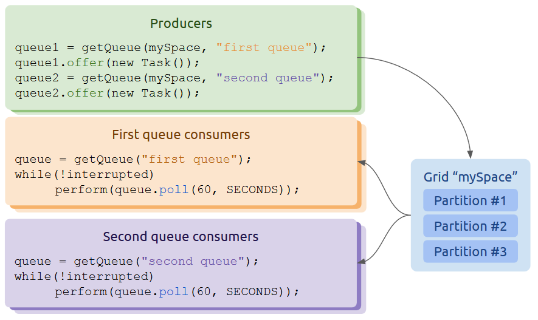

| Author | Product Version | Reference | Download |
|---|---|---|---|
| Mike Raney | 10.2 | Github link |
This is a distributed Java collection implementation on top of Gigaspaces. It currently includes the implementation of java.util.concurrent.BlockingQueue and java.util.Set with a number of features on top of them, e.g. different collocation modes.
This project is based on Maven, to build it run following:
# with unit tests
mvn clean package -Dcom.gs.home=<path to The project includes multi-partitioned space unit tests. Please use proper product license key to run these. To pass the licence file to tests, the com.gs.home JVM argument is used. A proper value is path to folder without slash at the end, e.g. /home/ec2-user/gaspaces-insightedge-enterprise-14.2.0.
Each collection declaration requires passing Gigaspace bean to the configurer or bean factory. Here is how you can create set and queue via Spring XML and Java configurations:
GigaSet<Person> set = new GigaSetConfigurer<Person>(gigaSpace).gigaSet();
GigaQueue<Person> queue = new GigaQueueConfigurer<Person>(gigaSpace, "myPersonQueue", CollocationMode.DISTRIBUTED).gigaQueue();
<!-- Space declaration is omitted -->
<os-core:giga-space id="myGigaSpace" space="space"/>
<bean id="myGigaSet" class="org.openspaces.collections.GigaSetFactoryBean">
<property name="gigaSpace" ref="myGigaSpace"/>
</bean>
<bean id="myGigaQueue" class="org.openspaces.collections.GigaQueueFactoryBean">
<property name="queueName" value="myQueue"/>
<property name="gigaSpace" ref="myGigaSpace"/>
<property name="collocationMode" value="DISTRIBUTED"/>
</bean>
@Service
public class MyService {
@Resource(name = "myGigaSet")
private GigaSet<SerializableType> set;
@Resource(name = "myGigaQueue")
private GigaBlockingQueue<SerializableType> queue;
}
Only Serializable elements can be stored in GigaSet.
Current implementation of GigaSet supports two modes: clustered and non-clustered. If a specific mode is not chosen, it will be set automatically based on given GigaSpace. Clustered mode is set to false if the space is an embedded one and the space is not a local cache proxy, true otherwise. When declaring the mode, user can leave this flag unset or choose false to work with single member of the grid or true to work with the whole cluster. This allows to switch between client-side implementation of GigaSet which interacts with remote space and server-side implementation that works with own embedded space.
Here is an example of how to create a GigaSet for a single grid member (embedded space):
GigaSet<Person> set = new GigaSetConfigurer<Person>(gigaSpace)
.clustered(false)
.gigaSet();
Or, with XML configuration:
<!-- Embedded space declaration is omitted -->
<os-core:giga-space id="myGigaSpace" space="space"/>
<bean id="myGigaSet" class="org.openspaces.collections.GigaSetFactoryBean">
<property name="gigaSpace" ref="myGigaSpace"/>
<property name="clustered" value="false"/>
</bean>
GigaQueue supports three collocation modes, multi-client usage, non-serializable element types and capacity limits.

In this mode collection items are spread over the whole cluster. It is preferred mode for collections of huge sizes, since memory consumption is balanced across the grid. User items are wrapped into meta classes and stored in space one by one.

In local collocation mode items are stored within the same partition as the metadata object. This mode should be chosen when application interacts with multiple small collections stored in the grid. It is scalable by collection count and not by the number of items in one collection. User items are wrapped into meta classes and stored in space one by one.

This mode suggests that user items are stored inside single collection container object. Thus items do not have their own space identity and are stored together. This mode is similar to local mode but groups up items for performance needs.

GigaQueue can have multiple clients operating over one collection. Several processes may declare a queue with one name: this will create only one queue structure in space and will allow clients to offer and poll with a single source. For example, queue may be filled with tasks by the producer process and emptied by the consumers.
It is strongly recommended to reuse one instance of queue within one java process due to client-side optimizations. Thus, it is recommended to declare a queue as a Spring context bean, and just inject it wherever it's required without additional creation.
By default all queue items will be serialized into byte arrays and stored in space. To tweak the serialization, you can provide an item class which will be used to determine if items must be stored in byte form or note. Next configuration will skip additional serialization, if Person class implements Serializable:
GigaQueue<Person> queue = new GigaQueueConfigurer<Person>(gigaSpace, "myPersonQueue", DISTRIBUTED)
.elementType(Person.class)
.gigaQueue();
Or, with XML configuration:
<bean id="myGigaQueue" class="org.openspaces.collections.GigaQueueFactoryBean">
<property name="queueName" value="myQueue"/>
<property name="gigaSpace" ref="myGigaSpace"/>
<property name="collocationMode" value="DISTRIBUTED"/>
<property name="elementType" value="com.myproject.bean.Person"/>
</bean>
You can also provide custom serializers and serializer providers using GigaQueueFactoryBean.
GigaQueue can be limited on capacity. This will change queue behavior when items count reaches the maximum. More information about bounded queue behavior can be found in method docs. To create a bounded queue, next declaration may be used:
GigaQueue<Person> queue = new GigaQueueConfigurer<Person>(gigaSpace, "myPersonQueue", DISTRIBUTED)
.capacity(100)
.gigaQueue();
Or, with XML configuration:
<bean id="myGigaQueue" class="org.openspaces.collections.GigaQueueFactoryBean">
<property name="queueName" value="myQueue"/>
<property name="gigaSpace" ref="myGigaSpace"/>
<property name="collocationMode" value="DISTRIBUTED"/>
<property name="capacity" value="100"/>
</bean>